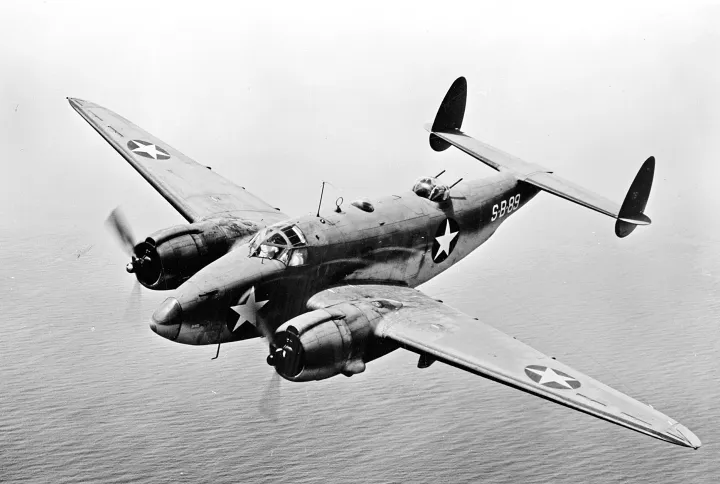
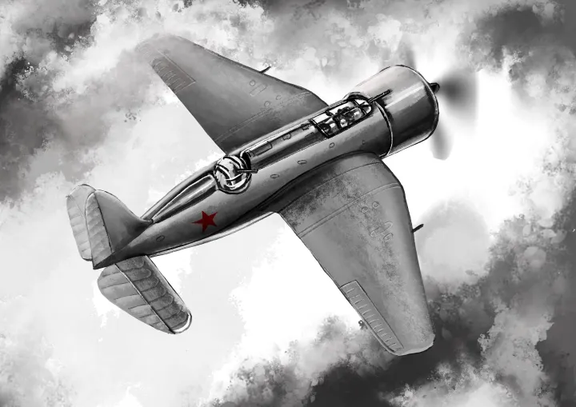

|
Prin 1680, după ce a studiat îndelung zborul păsărilor, fiziologul şi fizicianul italian Giovanni Borelli a conchis că omul nu poate zbura prin mijloace proprii. De aceea, mulţi au gândit apoi, după senzaţionala invenţie a fraţilor Montgolfier, că soluţia zborului uman o constituie aparatele mai uşoare decât aerul. Cel mai important reprezentant al acestei orientări a fost un englez cu o remarcabilă viziune, George Cayley. În cartea „Despre navigaţia aeriană” (1809), el a enunţat principiul funcţionării avionului (o suprafaţă portantă suportă o greutate, înfrângând rezistenţa aerului printr-o forţă motrice) şi i-a descris componentele principale, inclusiv elicea. În 1804 a construit o machetă, iar, din 1809, mai multe planoare, dar n-a avut la dispoziţie un motor suficient de uşor.Folosit pe scară largă în anii 1800, motorul cu abur a revoluţionat designul navelor şi a făcut posibilă apariţia căii ferate, numai că navele şi locomotivele nu trebuia să se ridice în aer. Motoarele cu abur erau masive şi grele, mult prea grele pentru puterea produsă, şi necesitau cantităţi considerabile de lemn sau carbune pentru alimentare şi apă pentru producerea aburului. Apărute la începutul secolului XX, primele avioane cereau mult curaj și îndemânare pentru a le pilota. În acea vreme, ele nu erau nici rapide, nici încăpătoare. Primul zbor controlat, propulsat, cu un aparat mai greu decât aerul l-au făcut Frații Wright pe 17 decembrie 1903, primul zbor efectiv autopropulsat a fost făcut de Traian Vuia la data de 18 martie 1906, iar primul zbor oficial autopropulsat a fost făcut de Alberto Santos-Dumont la data de 12 noiembrie 1906. Henri Coandă este inventatorul aparatului de zbor fără elice, acesta fiind propulsat de un motor cu reacție. Louis Blériot a fost primul pilot care a traversat Canalul Mânecii, în 1909. Charles Lindbergh a realizat prima traversare a Atlanticului, singur și fără escală, în 1927. În 1933, Wiley Post a fost primul pilot de avion care a făcut singur înconjurul lumii. A parcurs 25 000 km în 7 zile, 18 ore și 49 minute. Primul din lume care a folosit denumirea de „avion”, numindu-și astfel aparatul construit de el, a fost francezul Clement Ader (1841-1925). El a folosit acest nume în proiectul pentru brevetul 205155 pe care l-a obținut la 19 septembrie 1890. Această denumire a fost oficializată în 1911, pentru a numi aparatele de zbor cu aripă fixă și motor. | 
 |